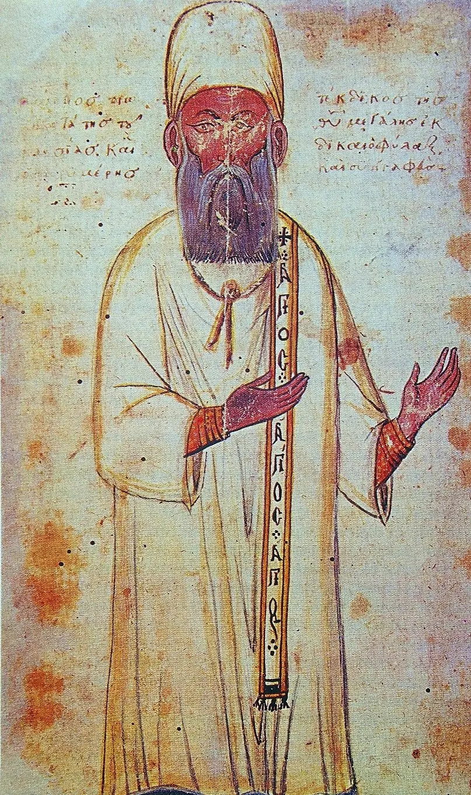
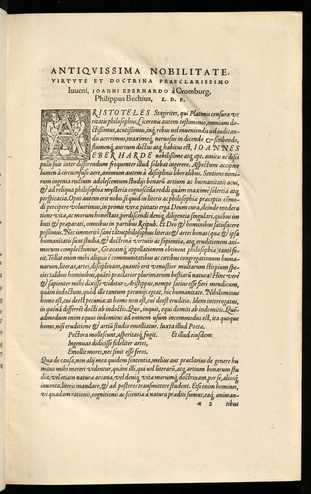

Original en inglés:
Pachymeres, Georgios and Xenophontos, Sophia. Commentary on Aristotle, ›Nicomachean Ethics‹: Critical Edition with Introduction and Translation. Berlin, Boston: De Gruyter, 2022. https://doi.org/10.1515/9783110643060
Comentario a la ética nicomáquea de Aristóteles. Jorge Paquimeres (en latín, Georgios Pachymeres; en griego, Γεώργιος Παχυμέρης). Traducción en español de Eduardo Alemán. Fragmento.
Edición crítica con introducción y traducción. Editado por Sophia Xenophontos. Traducido por Sophia Xenophontos y Crystal Addey.

El clérigo, erudito e historiador bizantino Jorge Paquimeres (1242 – c. 1310). Artista bizantino desconocido, dominio público, vía Wikimedia Commons.
Prefacio
El volumen que tienen ante ustedes representa la editio princeps del Comentario de Jorge Paquimeres sobre la Ética a Nicómaco de Aristóteles. Es producto de un profundo interés por la recepción de la tradición clásica en el Bizancio tardío, con especial atención a la ética y la moral griegas. Una serie de estudios interpretativos que he publicado sobre este tema me han hecho plenamente consciente de la propensión de los eruditos bizantinos a transformar el pensamiento moral griego antiguo, pero también desencadenado una marcha hacia territorios inexplorados. Uno de estos fue la inclusión de la filosofía ética clásica en la pedagogía bizantina tardía, no simple o necesariamente como una materia escolar en un contexto institucional, sino como un conjunto de mandatos prácticos que conducen a la buena vida al abogar por una habituación a la autodisciplina. En el texto de Paquimeres, mucho de esto ha sido embellecido por una comprensión religiosa de la ética basada en elementos extraídos de los requisitos sociales y culturales de Constantinopla a principios del siglo XIV. La tradición y la variación, el aprendizaje cognitivo y el didactismo moral, el material pagano y cristiano se encuentran, por tanto, entre los temas y dicotomías negociados o aludidos en este fascinante documento. Dejo que los lectores reflexionen sobre estos asuntos mientras hojean el texto por primera vez, aunque la Introducción ofrece un trasfondo, cuyo objetivo es despertar el interés y suscitar más investigaciones.
Este libro se realizó en el marco de una importante beca de investigación para el proyecto “The reception of Aristotle in Byzantium: The first critical edition of George Pachymeres’ Commentary on Aristotle’s Nicomachean Ethics”, del cual fui el investigador principal. El proyecto fue financiado generosamente por el Consejo de Investigación de Artes y Humanidades (AHRC) en el Reino Unido (AH/P008887/1), lo que no solo me permitió dedicarme a tiempo completo a la edición, traducción, introducción y actividades de impacto relacionadas. actividades, pero también proporcionándome valiosos colaboradores. Estoy profundamente en deuda con Crystal Addey (University College Cork) por su arduo trabajo y contribución sustancial a la traducción al inglés del texto durante su beca de investigación en el proyecto. Un agradecimiento especial también a Anna Marmodoro (coinvestigadora, Universidad de Oxford/Universidad de Durham) y Riccardo Chiaradonna (asesor internacional, Universidad Roma Tre) por ofrecernos asesoramiento, en particular, pero no exclusivamente, en nuestros talleres programados, donde se abordaron cuestiones editoriales y de otro tipo. discutido. También me gustaría agradecer la ayuda financiera del Carnegie Trust para las Universidades de Escocia por una beca de incentivo a la investigación que me concedieron en una etapa temprana del trabajo, del Departamento de Clásicos y la Escuela de Humanidades de la Universidad. Universidad de Glasgow por apoyar varios viajes de investigación a través de su Fondo de Incentivación, y de AHRC por cubrir las tarifas de acceso abierto para este libro. Además, agradezco a la Biblioteca Apostólica Vaticana, la Real Biblioteca del Monasterio de El Escorial y la Biblioteca nazionale Marciana por permitirme consultar in situ manuscritos centrales para la edición. Crystal Addey también quisiera agradecer a la fallecida Sarah Broadie y muy especialmente a Michael Griffin por su ayuda con la traducción.
Lo más importante es que tengo una deuda de gratitud con el proyecto de investigación Commentaria in Aristotelem Graeca et Byzantina (CAGB) de la Academia de Ciencias y Humanidades de Berlín-Brandenburgo, y en particular con Dieter Harlfinger y Lutz Koch, por confiarme la edición y por su útil orientación editorial durante la preparación y revisión. También me gustaría dejar constancia de mi agradecimiento a Nikos Agiotis por asesorarme sobre la presentación y edición de los diagramas, a Ioannis Polemis por los comentarios editoriales, a Georgi Parpulov por la asistencia paleográfica, a Michele Trizio por comentar la Introducción, y a Ciro Giacomelli, Pelagia Vera Loungi y Niccolò Zorzi por su correspondencia informal y su intercambio de ideas. Posteriormente, Pantelis Golitsis y Diether R. Reinsch revisaron todo el libro y proporcionaron comentarios y sugerencias invaluables. Parte del material tratado en la Introducción se presentó en conferencias y talleres en Oxford, Viena y Atenas, y agradezco los comentarios recibidos en esas ocasiones. Mi más profundo agradecimiento se lo debo a mi esposo Petros Bouras-Vallianatos, quien ha sido una fuente constante de estímulo e inspiración, habiendo leído y comentado incisivamente todas las partes del manuscrito desde su inicio. Este libro es para él.
Universidad Aristóteles de Tesalónica Sophia A. XenophontosSeptiembre de 2022
Introducción
1 Jorge Paquimeres : su vida y obra
Jorge Paquimeres, una figura importante en el panorama intelectual del primer período paleólogo (1261-1341),1 nació en Nicea en 1242. Recibió su educación primaria allí y luego se mudó a Constantinopla tras su reconquista por los bizantinos en 1261. Aunque tenemos escaso conocimiento de los estudios superiores que realizó en la capital, ya que ninguna fuente histórica menciona este período de su vida, algunos críticos consideran que fue alumno de Jorge Acropolita (1217-1282), responsable de la supervisión y reorganización de la educación superior en ese momento. La carrera pública de Paquimeres estuvo marcada entonces por la asunción de una serie de cargos eclesiásticos y civiles: fue diácono de la Gran Iglesia de la capital (1265) y notario (1266); sirvió como didaskalos tou apostolou (responsable de comentar las Epístolas y los Hechos de los Apóstoles, 1277) y como hieromnēmōn (a cargo de asuntos religiosos, particularmente ordenaciones, 1285), y ocupó los puestos cada vez más importantes de dikaiofilax ( juez, guardián de las leyes) y prōtekdikos (jefe del tribunal eclesiástico, poco después de 1285 hasta su muerte hacia 1310).2
La producción de Paquimeres es vasta y de amplio alcance, y refleja algunas de las tendencias de su época, por ejemplo, un resurgimiento del interés por los textos clásicos y un mayor enfoque en el estudio de la filosofía y la ciencia impulsado por la interacción con personas prominentes y redes académicas. Su historia integral (Συγγραφικαὶ ἱστορίαι) describe los reinados de Miguel VIII y Andrónico II desde 1260 hasta 1308.3 Una de sus principales preocupaciones era exponer las controversias teológicas que perturbaban al imperio, posiblemente con miras a dar prominencia a las calamidades políticas actuales. Además de su Historia, Paquimeres escribió sobre retórica (p. ej., declamaciones, progymnasmata, cartas), religión (p. ej., un tratado sobre la procesión del Espíritu Santo, PG 144, 924B–928D), filología (p. ej., escolia a Homero) y ciencia. (por ejemplo, el Quadrivium, un manual educativo sobre aritmética, música, geometría y astronomía).4 También escribió una paráfrasis de la obra de Pseudo-Dionisio el Areopagita (PG 3–4 passim),5 algunos poemas,6 y su Philosophia, un compendio de doce obras del corpus aristotélico, que toma la forma híbrida de una paráfrasis entrelazada con elementos de análisis exegético.7
Las últimas décadas han visto enormes avances en la investigación centrada en la producción filosófica de Paquimeres, debido en particular a la floreciente actividad editorial asociada con el proyecto de investigación Commentaria in Aristotelem Graeca et Byzantina en Berlín (CAGB) y en la Academia de Atenas (Corpus Philosophorum Medii Aevi / Commentaria in Aristotelem Byzantina = CPhMA/CAB).8 La Philosophia es testimonio de la contribución de Paquimeres a la creciente importancia de los estudios aristotélicos en la educación bizantina tardía.9 Pero también es un manual didáctico que gozó de considerable popularidad en varios otros escenarios de los siglos XIV al XVIII, como se ve en la circulación de numerosos manuscritos y una traducción latina del siglo XVI realizada por Philippo Bechio (Basilea 1560).10

Georgii Pachymerii Hieromnemonis, in universam fere Aristotelis philosophiam, epitome : in qua & aliorum philosophorum, qui ante & post ipsum claruere, dogmata sic enarrantur, ut iusti commentarii instar esse possit : Graeco in Latinum sermonem […]. Basileae : [Hieronymus Froben und Nicolaus Episcopius], 1560. Universitätsbibliothek Basel. , UBH Bc I 33:1 https://doi.org/10.3931/e-rara-122205 / Public Domain Mark
El interés de Paquimeres por la filosofía se extendió más allá del resumen aristotélico antes mencionado para incluir un grupo de comentarios individuales especializados: una continuación del comentario inacabado de Proclo sobre el Parménides de Platón,11 así como comentarios sobre el Organon de Aristóteles, la Física,12 la Metafísica,13 Sobre las Partes de los Animales, y la Ética a Nicómaco, siendo esta última el objeto de la presente edición. Todos estos comentarios ofrecen una prueba más de los decididos esfuerzos de Paquimeres como educador por situar firmemente la filosofía y la ciencia antiguas en la agenda del aprendizaje bizantino tardío.
2 El comentario sobre la ética a Nicómaco de Aristóteles
2.1 Breve historia de los comentarios escritos sobre la EN desde la antigüedad hasta finales de la Edad Media
Nos han llegado numerosos comentarios sobre determinados libros de la Ética a Nicómaco (en adelante abreviada EN). Los más antiguos que se conservan son los de Aspasio en el siglo II d. C. en los libros 1 a 4, 7 y 8 de la EN. 14 También tenemos escolios anónimos de los libros 2, 3, 4 y 5, que probablemente datan del último cuarto del siglo II. siglo II d.C. 15 El siguiente esfuerzo sistemático para interpretar la EN ocurre, inesperadamente, después de un lapso de casi diez siglos, 16 cuando Eustracio (ca. 1050-ca. 1120), obispo metropolitano de Nicea, comentó los Libros 1 y 6, y su contemporáneo Miguel de Éfeso (ca. 1060-1130/1135) en los libros 5, 9 y 10. Se cree que tanto Eustracio como Miguel actuaron en un contexto de patrocinio imperial a instancias de la princesa Ana Comnene, 17 mientras que sus esfuerzos combinados influyeron en la recepción de la EN en Occidente, ya que a mediados del siglo XIII Robert Grosseteste produjo un Traducción latina de una recopilación de comentarios griegos sobre la EN en la que las obras de Eustracio y Miguel jugaron un papel clave. 18 También existe un comentario anónimo sobre el Libro 7, fechado cautelosamente en el siglo XIII. 19 Además, una misteriosa última paráfrasis de la EN fue copiada en 1366 para el emperador Juan VI Kantakouzenos (nombre monástico Ioasaph, m. 1383). Su autoría es dudosa, aunque a veces se atribuye erróneamente a Andrónico de Rodas, Olimpiodoro o Heliodoro de Prusa. 20 El propio Jorge Paquimeres también escribió una paráfrasis de la EN como parte de su Philosophia (Libro XI). Finalmente, las Protheōroumena (notas introductorias) a la EN fueron producidas por George-Gennadios Scholarios en el siglo XV, así como una Aclaración (διασάφησις) de la misma obra por Theodore Gaza. 21
Esta breve historia de la redacción de comentarios sobre la EN da testimonio de un vigoroso esfuerzo exegético para dar sentido a la ética aristotélica, particularmente en los años de Comneno. El método y el estilo de los comentarios del siglo XII apuntan al hecho de que fueron escritos para una audiencia especializada, lectores de filosofía de élite, adaptando la forma y el contenido de los comentarios filosóficos de la antigüedad tardía a los requisitos del contexto cultural contemporáneo. Se ha sugerido con razón, por ejemplo, que “[l]os comentaristas filosóficos del siglo XII esperaban que sus textos ayudaran a los lectores no sólo a comprender mejor a Aristóteles sino también a convertirse en mejores personas aplicando su Ética a sus vidas”. 22 El despliegue académico y práctico de la ética de Aristóteles fue retomado por eruditos bizantinos posteriores como Nicéforo Blemmydes (1197-1272), el emperador Teodoro II Láscaris (1222-1258), Teodoro Metoquita (1270-1332) y Manuel Palaiologos (1455-1512), todos los cuales mostraron interés en la ética como disciplina académica y práctica en ensayos independientes, discursos y obras de otros géneros.
2.2 Lectores, objetivos y cronología del comentario de Paquimeres
El mismo énfasis en la teoría y la práctica moral, en este caso por una ruta puramente exegética, es evidente en el Comentario de Paquimeres sobre la EN, que busca servir a los estudiantes de filosofía (como también lo hacen sus otros comentarios individuales), mientras que al mismo tiempo permitiendo un uso práctico de la ética al lograr una vida de autocontrol con mentalidad filosófica, como se verá más adelante. Por lo tanto, la composición del Comentario debe entenderse a la luz del papel de Paquimeres como educador en Constantinopla, lo que a su vez ayuda a explicar los rasgos didácticos y moralizantes omnipresentes que atraviesan el texto. 23
En el Comentario, Paquimeres se refiere de paso a otras partes del corpus aristotélico, como Sobre el alma, la Física y la Metafísica, presuponiendo familiaridad con sus temas principales. Con ese fin, a veces introduce recordatorios a los estudiantes para que recuerden secciones de la tradición aristotélica ya examinadas o discutidas en una ocasión anterior. Además, aporta una lógica escolar rudimentaria para ilustrar teoremas filosóficos complejos y ayudar a sus estudiantes a comprender las sutilezas nocionales de la filosofía ética. Este material auxiliar se extrae directamente de Aristóteles o de las obras de sus comentaristas, como el comentario de Alejandro de Afrodisias sobre los Tópicos de Aristóteles, y se relaciona, por ejemplo, con tipos de silogismos, primeros principios, definición y demostración, categorías, o especie, género y diferencias. En otras ocasiones, la aritmética y la geometría básicas (por ejemplo, la proporción aritmética, la proporción geométrica, las figuras recíprocamente relacionadas), así como la astronomía (por ejemplo, el hecho de que los eclipses demuestran la forma circular de la Luna y que la proximidad de los planetas se demuestra por su falla). parpadear) ingrese al Comentario para ayudar a la comprensión. Lo anterior es un índice seguro de la formación educativa de los destinatarios previstos de Paquimeres, quienes deben haber sido relativamente avanzados en sus estudios y ciertamente no novatos, dado que el conocimiento de estos temas precedió al estudio de la ética en el plan de estudios. 24
En cuanto a los otros objetivos del Comentario, a pesar de su estado fragmentario, 25 tenemos suficiente para sugerir que representa un plan enfocado para comentar la EN en su conjunto. A diferencia de sus predecesores, que exponen libros separados y (a menudo) muy separados del original aristotélico, en lo que sobrevive del Comentario, Paquimeres ofrece una interpretación más escasa y económica del texto, optando por el análisis de líneas aristotélicas específicas y no por una interpretación línea por línea o palabra por palabra, como hace Eustracio, por ejemplo. Para presentar esto en cifras, el comentario de Paquimeres sobre el Libro 1 contiene aproximadamente 8.700 palabras, mientras que el comentario de Eustracio sobre el mismo Libro contiene ca. 45.600 palabras y, por lo tanto, es aproximadamente seis veces más largo. 26 El objetivo de este autor de hacer un análisis conciso del modelo antiguo se alinea con la forma y función de los comentarios de Paquimeres sobre la Física o el Organon, como se refleja en sus títulos. según el cual los comentarios debían ser breves explicaciones de los correspondientes tratados aristotélicos. 27 Por otro lado, como último comentario exegético superviviente sobre la EN en griego en el sentido estricto del término, la obra de Paquimeres constituye una contraparte a los comentarios exegéticos del plan de estudios de enseñanza alejandrino, reviviéndolos y emulándolos. Su carácter pedagógico aumentado presumiblemente evidencia un esfuerzo por compensar la falta de un comentario antiguo tardío sobre el texto como consecuencia del menor interés por la ética en el plan de estudios, en el que la lógica de Aristóteles tomó protagonismo. 28
En cuanto a la fecha de la obra, se cree que los comentarios individuales de Paquimeres, incluido el de la EN, fueron escritos hacia el final de su vida, y más concretamente después de 1307, año que marcó su repentino abandono de su actividad histórica. Se ha argumentado que su trabajo tenía como objetivo lanzar sus escritos filosóficos. 29 También se ha sugerido que el comentario sobre la Metafísica es anterior al de la EN, lo que refleja el orden en el que las obras aristotélicas se resumen en la Philosophia ( Metafísica = Libro 10, EN = Libro 11). 30 Aún así, dada la ausencia de cualquier referencia explícita al Comentario sobre la EN en cualquier otra obra de Paquimeres o de cualquier otro autor, no se pueden llegar a conclusiones firmes con respecto a su cronología precisa. Si la primera sugerencia anterior tiene alguna validez, la forma segmentada de la obra tal vez podría explicarse a la luz de la muerte de Paquimeres alrededor de 1310, aunque existe la posibilidad de que el copista del testigo más antiguo (Marciano Gr. Z. 212 = M), el cardenal Bessarion (1408-1472), careció de un testigo del resto del texto o incluso decidió, por alguna razón desconocida, no proceder a copiarlo, no debe ser rechazado de plano.